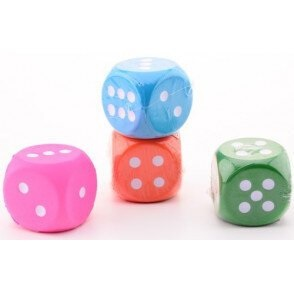
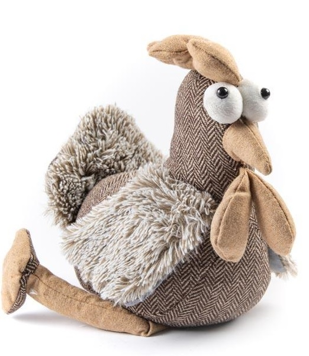

Izmantošanas iespējas
Sakarā ar ārkārtējās situācijas izsludināšanu Latvijas teritorijā 2020.gada 12.marta, saistītu ar Covid-19 pandēmijas izplatību, Marijai S. Neizdevās veiksmīgi izprintēt visas kuba skaldnes. Ir jāpiemin, ka ir bijuši 3 kopumā neveiksmīgi mēģinājumi.
- Jauks piekariņš
- Spēļu kauliņš
- Draudzībai veltīts nieciņš
- Anti-stress rotaļlieta
- Durvju aizturētājs
|  |
|  |